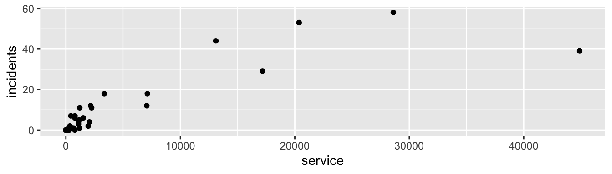

Chapitre 11 Régression de Poisson / régression loglinéaire
Les slides associés à la régression loglinéaire sont disponibles ici ExSlidesMLG.pdf (partie II)
Le jeu de données utilisé dans ce chapitre est ShipAccident issu de la librairie
AER.
Dans ce chapitre, on s’intéresse au cas où la variable réponse \(Y\) compte le nombre de fois qu’un certain évènement a lieu dans une période de temps donnée (e.g. nombre d’accidents de la route sur une année, nombre d’enfants par famille, le nombre de grèves d’une compagnie sur une période de trois ans, etc). Nous allons illustrer les différents points abordés dans ce chapitre avec l’exemple suivant.
Example 11.1 Nombre d’incidents maritimes On s’intéresse à la variable incidents comptant le nombre d’incidents par mois de mise en service d’un bateau. On considère ici un échantillon de 40 bateaux et l’on souhaite expliquer la variable incidents à l’aide des 4 variables suivantes :
- type : il y a 5 types de bateaux, désignés par A-B-C-D-E. C’est une variable qualitative nominale, codée sous forme de facteur,
- construction : période de construction du bateau, à savoir entre 1960 et 1979 par périodes de 5 ans,
- operation : période de mise en service (entre 1960 et 1974 ou entre 1975 et 1979),
- service : nombre total de mois de mise en service du bateau.
Comme dans le chapitre précédent, on considère des variables explicatives quantitatives et qualitatives. Le comportement de ces variables est résumé sur la Figure 11.1, sauf la variable type pour laquelle chacune des modalités apparaît exactement 8 fois.
type construction operation service incidents
A:8 1960-64: 9 1960-74:19 Min. : 0.0 Min. : 0.0
B:8 1965-69:10 1975-79:21 1st Qu.: 175.8 1st Qu.: 0.0
C:8 1970-74:10 Median : 782.0 Median : 2.0
D:8 1975-79:11 Mean : 4089.3 Mean : 8.9
E:8 3rd Qu.: 2078.5 3rd Qu.:11.0
Max. :44882.0 Max. :58.0 Figure 11.1: Résumé des différentes variables de l’exemple d’incidents maritimes.
À première vue, il semblerait d’après l’histogramme que la variable réponse incidents suive une loi de Poisson de petit paramètre. En particulier, la probabilité d’observer peu d’incidents est très élevée, alors que la probabilité d’observer plusieurs incidents décroit exponentiellement. Notons toutefois que la distribution de Poisson est la loi la plus simple permettant de modéliser des données de comptage, mais ce n’est pas la seule.
11.1 Modèle de régression loglinéaire
11.1.1 Pourquoi un modèle particulier ?
Dans la suite, on note \(Y=(Y_1,\ldots,Y_n)'\ \) le vecteur des réponses, et \(\textbf{x}_i\) le vecteur ligne des variables explicatives considérées pour l’individu \(i\) pour chaque \(i\) dans \(\{1\ldots,n\}\). Les variables réponses à expliquer \(Y_i | \textbf{x}_i \sim \mathcal P(\lambda(\textbf{x}_i))\) vérifient \[ \mathbb{E}[Y_i|\textbf{x}_i] = \lambda(\textbf{x}_i), \] avec \(\lambda(\textbf{x}_i)>0\). L’objectif est de construire un modèle pour reconstituer \(\lambda(\textbf{x}_i)\) en fonction des variables explicatives.
Si on utilise le modèle de régression usuel \(Y_i = \textbf{x}_i\theta +\varepsilon_i\) pour expliquer le nombre d’incidents en fonction du nombre de mois de mise en service, on s’aperçoit d’une part que l’hypothèse de normalité des résidus n’est clairement pas réaliste (voir la figure ??).
Figure 11.2: Ajustement d’un modèle linéaire (à gauche) et graphique QQ-plot des résidus correspondants (à droite)
D’autre part, les variables \(\varepsilon_i\) étant supposées centrées, \[\lambda(\textbf{x}_i) = \mathbb{E}[Y_i|\textbf{x}_i] = \textbf{x}_i \theta.\] Or rien n’indique que \(\textbf{x}_i \theta >0\). Il est donc nécessaire de définir une fonction lien reliant \(\lambda(\textbf{x}_i)\) au prédicteur linéaire \(\eta_i= \textbf{x}_i \theta\). Pour garantir que l’espérance conditionnelle \(\lambda(\textbf{x}_i)=\mathbb{E}[Y_i|\textbf{x}_i]\) est bien strictement positive, on définit le modèle par \[ \lambda(\textbf{x}_i)=\lambda_\theta ({\bf x}_i) = \exp({\bf x}_i \theta). \] Cela revient à poser \(\ln(\lambda_\theta ({\bf x}_i))={\bf x}_i \theta\). On retrouve la fonction lien logarithmique, qui est le lien canonique associé à la loi de Poisson, d’où le terme générique de régression loglinéaire. Une fois le modèle posé, il reste à estimer le paramètre du modèle \(\theta\) inconnu.
11.1.2 Estimation des paramètres
Comme dans le cas binaire, il faut bien faire attention à la nature des variables explicatives, et définir pour les variables qualitatives des modalités de référence. On se place ici dans un cadre très général.
Le paramètre \(\theta\) est estimé par la méthode du maximum de vraisemblance. La vraisemblance des données \(\underline{Y}=(Y_1,\ldots, Y_n)'\) est définie par : \[ L(\underline{Y}; \theta) = \prod_{i=1}^n \left[\frac{\lambda_\theta ({\bf x}_i)^{Y_i}}{Y_i !} \exp(-\lambda_\theta ({\bf x}_i))\right], \] et la log-vraisemblance par : \[\begin{eqnarray*} l(\underline{Y}; \theta) &=& \sum_{i=1}^n \left[Y_i \ln(\lambda_\theta ({\bf x}_i)) - \lambda_\theta ({\bf x}_i) - \ln(Y_i !) \right]\\ &=& \sum_{i=1}^n \left[Y_i {\bf x}_i \theta - e^{{\bf x}_i \theta} - \ln(Y_i !) \right]. %&=& \sum_{i=1}^n Y_i - F(\theta_0 + \theta_1 x_i). \end{eqnarray*}\] Comme dans les chapitres précédents, on cherche alors à annuler les dérivées partielles : \[\frac{\partial l(\underline{Y}; \theta) }{\partial \theta_j} = \sum_{i=1}^n \left[x_i^{(j)} (Y_i - e^{{\bf x}_i \theta})\right].\]
Encore une fois, le système obtenu n’admet généralement pas de solution calculable analytiquement. Un algorithme de type Newton-Raphson ou de Fisher-scoring est alors mis en place, nécessitant l’évaluation la matrice hessienne ou la matrice d’information de Fisher. Les dérivées d’ordre secondes sont obtenues de la manière suivante : \[\frac{\partial ^2 l(\underline{Y};\theta)}{\partial \theta_j \partial\theta_k} = -\sum_{i=1}^n x_i^{(j)} x_i^{(k)} e^{{\bf x}_i \theta}, \] d’où l’écriture matricielle de l’information de Fisher \[\mathcal I_n(\theta) = X' W X, \quad \mbox{avec} \quad W = \mbox{diag}[e^{{\bf x}_1 \theta},\ldots,e^{{\bf x}_n \theta}],\] et \(X\) la matrice de design dont les lignes sont composées des vecteurs \({\bf x}_i\).
Remarquons encore une fois que cette matrice dépend du paramètre inconnu \(\theta\) d’où la nécessité de mettre en place un algorithme itératif. Par ailleurs, notons que les dérivées secondes ne dépendant pas des variables \(Y_i\), les algorithmes de Newton-Raphson et de Fisher-scoring sont exactement les mêmes.
11.1.3 Ajustement et prédiction
Une fois le modèle ajusté, nous obtenons une estimation pour chaque prédicteur linéaire \(\eta_i={\bf x}_i\theta\) par \(\hat \eta_i={\bf x}_i\hat\theta\) et pour chaque paramètre \[\hat \lambda(\textbf{x}_i) = \lambda_{\hat\theta}({\bf x}_i) = \exp(\textbf{x}_i \hat\theta).\]
Les valeurs ajustées \(\widehat Y_i\) pour les \(Y_i\) sont alors définies suivant la règle \[ \widehat Y_i \ \in\ \underset{k\in\mathbb{N}}{\mbox{argmax}} \ \left\{\frac{(\hat\lambda(\textbf{x}_i))^k}{k!}e^{-\hat\lambda(\textbf{x}_i)}\right\}. \] \(\widehat Y_i\) correspond donc à l’entier le plus probable pour la loi de Poisson de paramètre \(\hat\lambda(\textbf{x}_i)\).
Si l’on se donne maintenant un nouvel individu décrit par \(\textbf{x}_0\) alors le modèle ajusté permet de prédire son nombre moyen de “succès”, donné par \(\hat\lambda(\textbf{x}_0) = \exp(\textbf{x}_0 \hat\theta)\), et sa réponse prédite définie par
\[ \widehat Y_0 \ \in\ \underset{k\in\mathbb{N}}{\mbox{argmax}} \ \left{\frac{[\hat\lambda(\textbf{x}_0)]^k}{k!}e^{-\hat\lambda(\textbf{x}_0)}\right\}. \]
11.2 Exemple de régression loglinéaire avec R
L’étude inférentielle du modèle de régression de Poisson est similaire au cas logistique, et découle directement des résultats asymptotiques étudiés dans le chapitre 9. Ils ne sont donc pas détaillés ici, mais illustrés dans cette partie sur l’exemple du nombre d’incidents maritimes.
11.2.1 Régression loglinéaire simple
Dans cette section, on modélise la variable réponse incidents à l’aide d’une seule variable explicative. On va distinguer selon la nature de la variable explicative.
11.2.1.1 Variable explicative quantitative
Commençons par modéliser la variable réponse incidents à l’aide de la variable \(x=\) service : \[\ln[\lambda_\theta(x)] = \theta_0 + \theta_1 x.\]
Call:
glm(formula = incidents ~ service, family = poisson, data = ShipAccidents)
Deviance Residuals:
Min 1Q Median 3Q Max
-6.0040 -3.1674 -2.0055 0.9155 7.2372
Coefficients:
Estimate Std. Error z value Pr(>|z|)
(Intercept) 1.613e+00 7.150e-02 22.55 <2e-16 ***
service 6.417e-05 2.870e-06 22.36 <2e-16 ***
---
Signif. codes: 0 '***' 0.001 '**' 0.01 '*' 0.05 '.' 0.1 ' ' 1
(Dispersion parameter for poisson family taken to be 1)
Null deviance: 730.25 on 39 degrees of freedom
Residual deviance: 374.55 on 38 degrees of freedom
AIC: 476.41
Number of Fisher Scoring iterations: 6
L’estimation du coefficient de la variable service vaut \(6.417 \times 10^{-5}\), et est donc très proche de \(0\). Cependant, la \(p\)-valeur du \(Z\)-test (basé sur l’approximation Gaussienne) étant \(<2\times10^{-16}\), nous rejetons la nullité de ce coefficient. Cela est probablement dû à la très grande variance de cette variable. En particulier, la variable service semble avoir une influence significative sur la variable incidents.
11.2.1.2 Variable explicative qualitative
À présent, modélisons la variable réponse incidents à l’aide de la seule variable qualitative type à \(5\) modalités.
Comme dans le cas binaire, pour rendre le modèle identifiable, il faut choisir une modalité de référence (ici, la modalité choisie par défaut est type=A). Le modèle s’écrit donc
\[\ln[\lambda_\theta(x)] = \theta_0 + \theta_1 \mathbb{1}_{{\tt type=B}} + \theta_2 \mathbb{1}_{{\tt type=C}} + \theta_3 \mathbb{1}_{{\tt type=D}} + \theta_4 \mathbb{1}_{{\tt type=E}}.\]
Call:
glm(formula = incidents ~ type, family = poisson, data = ShipAccidents)
Deviance Residuals:
Min 1Q Median 3Q Max
-7.9530 -2.0616 -0.4541 1.2873 4.3425
Coefficients:
Estimate Std. Error z value Pr(>|z|)
(Intercept) 1.6582 0.1543 10.747 < 2e-16 ***
typeB 1.7957 0.1666 10.777 < 2e-16 ***
typeC -1.2528 0.3273 -3.827 0.00013 ***
typeD -0.9045 0.2875 -3.146 0.00165 **
typeE -0.2719 0.2346 -1.159 0.24650
---
Signif. codes: 0 '***' 0.001 '**' 0.01 '*' 0.05 '.' 0.1 ' ' 1
(Dispersion parameter for poisson family taken to be 1)
Null deviance: 730.25 on 39 degrees of freedom
Residual deviance: 275.65 on 35 degrees of freedom
AIC: 383.52
Number of Fisher Scoring iterations: 6L’interprétation des coefficients n’étant pas si simple, il est possible de tester la significativité de la variable par un test de sous-modèle :
Analysis of Deviance Table
Model 1: incidents ~ 1
Model 2: incidents ~ type
Resid. Df Resid. Dev Df Deviance Pr(>Chi)
1 39 730.25
2 35 275.65 4 454.6 < 2.2e-16 ***
---
Signif. codes: 0 '***' 0.001 '**' 0.01 '*' 0.05 '.' 0.1 ' ' 1Ici, le test de rapport de vraisemblance (basé sur la déviance des modèles étudiés) rejette le sous-modèle nul. La variable type a une influence significative sur le nombre d’incidents, ce qui est en accord avec les boîtes à moustaches (boxplots) représentées en Figure 11.3. On comprend aussi pourquoi le paramètre estimé associé à type=B est très différent de 0 car différence de comportement de incident entre la modalité A de référence et B. Au contraire, on accepte la nullité du paramètre associé à type=E ce qui est en accord avec le comportement similaire de incident entre les modalités A et E de type (cf Figure 11.3).
Figure 11.3: Nombres d’accidents par mois de services en fonction du type de bateau.
11.2.2 Régression loglinéaire multiple
11.2.2.1 Ajustement du modèle additif
Dans cette section, on modélise la variable réponse incidents à l’aide de toutes les variables explicatives disponibles. Comme pour le cas binaire, nous pourrions considérer toutes les interactions d’ordre 2 entre les variables explicatives. Cependant, cela mènerait à estimer 37 coefficients, ce qui semble peu raisonnable pour un échantillon de 40 bateaux. Nous ajustons donc le modèle additif suivant
\[Y_i\sim\mathcal{P}(\lambda(\bf x)_i)\] avec
\[ \begin{array}{l l} \ln[\lambda(\textbf{x}_i)] = & \theta_0 + \alpha_1 \mathbb{1}_{{\tt type_i=B}} + \alpha_2 \mathbb{1}_{{\tt type_i=C}} + \alpha_3 \mathbb{1}_{{\tt type_i=D}} +\alpha_4 \mathbb{1}_{{\tt type_i=E}}\\ & + \beta_1 \mathbb{1}_{const_i = "65-69"} + \beta_2 \mathbb{1}_{const_i = "70-74"} + \beta_3 \mathbb{1}_{const_i ="75-79"} \\ & + \gamma_1\mathbb{1}_{op_i = "75-79"} + \theta_1 service_i \\ \end{array} \] Les modalités de référence des deux variables qualitatives construction et operation choisies sont respectivement 1960-64 et 1960-74.
Call:
glm(formula = incidents ~ ., family = poisson, data = ShipAccidents)
Deviance Residuals:
Min 1Q Median 3Q Max
-2.5810 -1.4773 -0.8972 0.5952 3.2154
Coefficients:
Estimate Std. Error z value Pr(>|z|)
(Intercept) 5.492e-04 2.787e-01 0.002 0.998427
typeB 5.933e-01 2.163e-01 2.743 0.006092 **
typeC -1.190e+00 3.275e-01 -3.635 0.000278 ***
typeD -8.210e-01 2.877e-01 -2.854 0.004321 **
typeE -2.900e-01 2.351e-01 -1.233 0.217466
construction1965-69 1.148e+00 1.793e-01 6.403 1.53e-10 ***
construction1970-74 1.596e+00 2.242e-01 7.122 1.06e-12 ***
construction1975-79 5.670e-01 2.809e-01 2.018 0.043557 *
operation1975-79 8.619e-01 1.317e-01 6.546 5.92e-11 ***
service 7.270e-05 8.488e-06 8.565 < 2e-16 ***
---
Signif. codes: 0 '***' 0.001 '**' 0.01 '*' 0.05 '.' 0.1 ' ' 1
(Dispersion parameter for poisson family taken to be 1)
Null deviance: 730.253 on 39 degrees of freedom
Residual deviance: 99.793 on 30 degrees of freedom
AIC: 217.66
Number of Fisher Scoring iterations: 511.2.2.2 Sélection de variables et sous-modèles
Il est possible de faire de la sélection de variables grâce à la commande step(fit.add). Une procédure de sélection de variables descendante sur critère AIC est alors appliquée sur le modèle additif. Dans notre cas, elle renvoie exactement le même modèle.
Start: AIC=217.66
incidents ~ type + construction + operation + service
Df Deviance AIC
<none> 99.793 217.66
- type 4 148.053 257.92
- operation 1 147.687 263.55
- service 1 182.605 298.47
- construction 3 191.419 303.29
Call: glm(formula = incidents ~ type + construction + operation + service,
family = poisson, data = ShipAccidents)
Coefficients:
(Intercept) typeB typeC
0.0005492 0.5932730 -1.1903189
typeD typeE construction1965-69
-0.8210370 -0.2899922 1.1478796
construction1970-74 construction1975-79 operation1975-79
1.5964752 0.5669790 0.8618750
service
0.0000727
Degrees of Freedom: 39 Total (i.e. Null); 30 Residual
Null Deviance: 730.3
Residual Deviance: 99.79 AIC: 217.7On pourrait également par exemple tester la nullité simultanée des coefficients des variables contructions et operation, ce qui revient à faire un test de sous-modèle, en considérant seulement les variables type et service.
fit.ssmod <- glm(incidents ~ type + service, data=ShipAccidents, family=poisson)
anova(fit.ssmod, fit.add, test="Chisq")Analysis of Deviance Table
Model 1: incidents ~ type + service
Model 2: incidents ~ type + construction + operation + service
Resid. Df Resid. Dev Df Deviance Pr(>Chi)
1 34 230.832
2 30 99.793 4 131.04 < 2.2e-16 ***
---
Signif. codes: 0 '***' 0.001 '**' 0.01 '*' 0.05 '.' 0.1 ' ' 1Le test de rapport de vraisemblance rejette le sous-modèle avec une \(p\)-valeur \(<2\times 10^{-16}\).
11.2.2.3 Prédiction
On souhaite prédire le nombre moyen d’incidents pour un bateau de type A, construit entre 1965 et 1969, et mis en service entre 1960 et 1975 au bout de 1000 mois de services.
\[ \hat\lambda_0 = e^{X_0 \hat\theta_{ML}} \textrm{ with } X_0=(1,\underbrace{0,0,0,0}_{type},\underbrace{1,0,0}_{construction},0,1000) \]
new.data = data.frame(type=factor("A"), construction=factor("1965-69"),
operation=factor("1960-74"), service = 1000)
lambda_hat = exp(predict(fit.add,new.data))
lambda_hat 1
3.391016 Utilisant la loi de Poisson \(A\sim\mathcal{P}(\hat\lambda_0)\), on peut alors prédire la probabilité de certains évenements comme par exemple
probabilité que ce type de bateau n’ait aucun incident : \(\mathbb{P}(A=0) = e^{- \hat\lambda_0}\)
probabilité que ce type de bateau ait au plus un incident :
\(\mathbb{P}(A\leq 1) = (1+\hat\lambda_0)e^{- \hat\lambda_0}\)
1
0.03367446 1
0.1478651 11.3 Sur-dispersion et modèle binomial négatif
Dans le cas du modèle de régression de Poisson, on a \[\mathbb{E}[Y_i|{\bf x}_i] = \text{Var}(Y_i|{\bf x}_i),\] ce qui est une hypothèse très restrictive. Si \(\mathbb{E}[Y_i|{\bf x}_i] > \text{Var}(Y_i|{\bf x}_i)\) (respectivement \(\mathbb{E}[Y_i|{\bf x}_i] < \text{Var}(Y_i|{\bf x}_i)\)), nous parlons alors de sur-dispersion (respectivement de sous-dispersion). Ces deux propriétés n’étant pas autorisées par le modèle de Poisson, nous définissons une classe plus riche de modèles basée sur la loi binomiale négative.
Rappelons que la loi binomiale négative de paramètres \(n\) et \(p\) permet de modéliser le nombre d’échecs nécessaires avant l’obtention de \(n\) succès lors de la répétition de “tirage” indépendants de probabilité de succès \(p\). Elle peut être généralisée à \(n=r\) non-entier.
Le modèle binomial négatif suppose que la loi de \(Y_i\) vérifie pour tout \(k\) \[\mathbb{P}(Y_i = k) = \frac{\Gamma(r+k)}{k! \Gamma(r)} \left(\frac{\lambda(\textbf{x}_i)}{\lambda(\textbf{x}_i)+r}\right)^k \left(1-\frac{\lambda(\textbf{x}_i)}{\lambda(\textbf{x}_i)+r}\right)^r.\] Nous pouvons alors démontrer que \[\mathbb{E}[Y_i] = \lambda(\textbf{x}_i) \quad \mbox{et}\quad \text{Var}(Y_i) = \lambda(\textbf{x}_i) (1 + \nu^2\lambda(\textbf{x}_i)),\] où \(\nu = 1/r\) mesure le degré de sur-dispersion. Remarquons que le cas limite \(\nu=0\) correspond à la loi de Poisson.
Comme dans le cas Poisson, l’espérance conditionnelle est modélisée par \[\mathbb{E}[Y_i|{\bf x}_i] = \lambda_\theta({\bf x}_i) = \exp({\bf x}_i \theta).\]
En particulier, ce modèle appartient également à la famille des modèles de regression loglinéaire. Les paramètres inconnus \(\theta\) et \(\nu\) sont estimés par maximum de vraisemblance.
Dans R, le modèle binomial négatif est implémenté dans la fonction glm() pour la famille de lois family = quasipoisson(link = "log").
11.4 Quelques codes avec python
import pandas as pd
import numpy as np
import statsmodels.api as sm
from statsmodels.formula.api import glm
Accidpy=r.ShipAccidents
fitservicepy=glm('incidents~service',data=Accidpy,family=sm.families.Poisson()).fit()
print(fitservicepy.summary()) Generalized Linear Model Regression Results
==============================================================================
Dep. Variable: incidents No. Observations: 40
Model: GLM Df Residuals: 38
Model Family: Poisson Df Model: 1
Link Function: log Scale: 1.0000
Method: IRLS Log-Likelihood: -236.21
Date: Jeu, 28 oct 2021 Deviance: 374.55
Time: 11:09:43 Pearson chi2: 368.
No. Iterations: 6
Covariance Type: nonrobust
==============================================================================
coef std err z P>|z| [0.025 0.975]
------------------------------------------------------------------------------
Intercept 1.6127 0.072 22.555 0.000 1.473 1.753
service 6.417e-05 2.87e-06 22.356 0.000 5.85e-05 6.98e-05
==============================================================================fittypepy=glm('incidents~C(type)',data=Accidpy,family=sm.families.Poisson()).fit()
print(fittypepy.summary()) Generalized Linear Model Regression Results
==============================================================================
Dep. Variable: incidents No. Observations: 40
Model: GLM Df Residuals: 35
Model Family: Poisson Df Model: 4
Link Function: log Scale: 1.0000
Method: IRLS Log-Likelihood: -186.76
Date: Jeu, 28 oct 2021 Deviance: 275.65
Time: 11:09:44 Pearson chi2: 249.
No. Iterations: 5
Covariance Type: nonrobust
================================================================================
coef std err z P>|z| [0.025 0.975]
--------------------------------------------------------------------------------
Intercept 1.6582 0.154 10.747 0.000 1.356 1.961
C(type)[T.B] 1.7957 0.167 10.777 0.000 1.469 2.122
C(type)[T.C] -1.2528 0.327 -3.827 0.000 -1.894 -0.611
C(type)[T.D] -0.9045 0.287 -3.146 0.002 -1.468 -0.341
C(type)[T.E] -0.2719 0.235 -1.159 0.246 -0.732 0.188
================================================================================from scipy.stats import chi2
LR_stat=(-2)*(fittypepy.llnull - fittypepy.llf);
pvalue=1-chi2(4).cdf(LR_stat);
print(LR_stat)454.60255359036790.0fitaddpy =glm('incidents~C(type)+C(construction)+C(operation)+service',
data=Accidpy,family=sm.families.Poisson()).fit()
print(fitaddpy.summary()) Generalized Linear Model Regression Results
==============================================================================
Dep. Variable: incidents No. Observations: 40
Model: GLM Df Residuals: 30
Model Family: Poisson Df Model: 9
Link Function: log Scale: 1.0000
Method: IRLS Log-Likelihood: -98.830
Date: Jeu, 28 oct 2021 Deviance: 99.793
Time: 11:09:45 Pearson chi2: 90.0
No. Iterations: 6
Covariance Type: nonrobust
==============================================================================================
coef std err z P>|z| [0.025 0.975]
----------------------------------------------------------------------------------------------
Intercept 0.0005 0.279 0.002 0.998 -0.546 0.547
C(type)[T.B] 0.5933 0.216 2.743 0.006 0.169 1.017
C(type)[T.C] -1.1903 0.327 -3.635 0.000 -1.832 -0.548
C(type)[T.D] -0.8210 0.288 -2.854 0.004 -1.385 -0.257
C(type)[T.E] -0.2900 0.235 -1.233 0.217 -0.751 0.171
C(construction)[T.1965-69] 1.1479 0.179 6.403 0.000 0.796 1.499
C(construction)[T.1970-74] 1.5965 0.224 7.122 0.000 1.157 2.036
C(construction)[T.1975-79] 0.5670 0.281 2.018 0.044 0.016 1.118
C(operation)[T.1975-79] 0.8619 0.132 6.546 0.000 0.604 1.120
service 7.27e-05 8.49e-06 8.565 0.000 5.61e-05 8.93e-05
==============================================================================================fitssmodpy = glm('incidents~C(type)+service',data=Accidpy,family=sm.families.Poisson()).fit()
LR_stat=(fitssmodpy.deviance - fitaddpy.deviance)
print(LR_stat)131.038742384960470.0